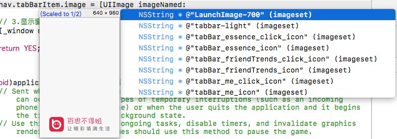
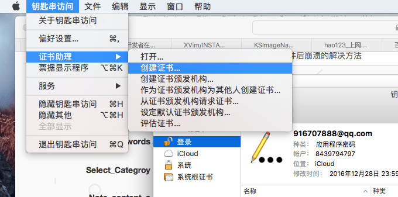
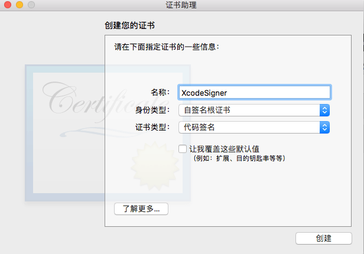
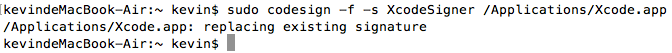

Xcode8安装KSImageNamed插件后崩溃的解决方法
这篇文章发布于 2017/02/04，归类于 iOS
标签：
Xcode安装KSImageNamed方法，Xcode8 安装KSImageNamed崩溃的解决方法
苹果在Xcode8中取消了对第三方插件的支持，安装了KSImageNamed插件后，Xcode8会不停的崩溃。这里总结了网上找到了一种重新签名Xcode(re-codesign Xcode)的方法，可以解决这个问题。对于是否影响上架还有待考证。

删除已经安装的KSImageNamed插件
rm -rf ~/Library/Developer/Xcode/Plug-ins/KSImageNamed.ideplugin/完全退出Xcode，创建代码签名证书XcodeSigner，打开应用程序 - 实用工具 - 钥匙串访问，创建证书

后面会执行一条命令，这里的名称如果你填了其它的，那命令的名称也需要改过来。

- 重新签名Xcode(Re-signing Xcode)
这里需要注意的是这条命令执行可能需要点时间，稍等一下，让它执行完，就像真机调试时一样，不要急。sudo codesign -f -s XcodeSigner /Applications/Xcode.app

上面的命令执行后，会弹窗问你是否允许XcodeSigner的一些操作，点总是允许就可以了。再打开从GitHub上下载的KSimageNamed工程，Command+R运行一遍就会自动安装该插件到对应的目录了。如果不能直接打开该工程，请参考下面给的GitHub链接里AMEstudio的相关回答。
完全退出Xcode，再次打开会有一个弹窗，点击loadBundle就可以了，我的就是这样解决的。
参考及扩展: